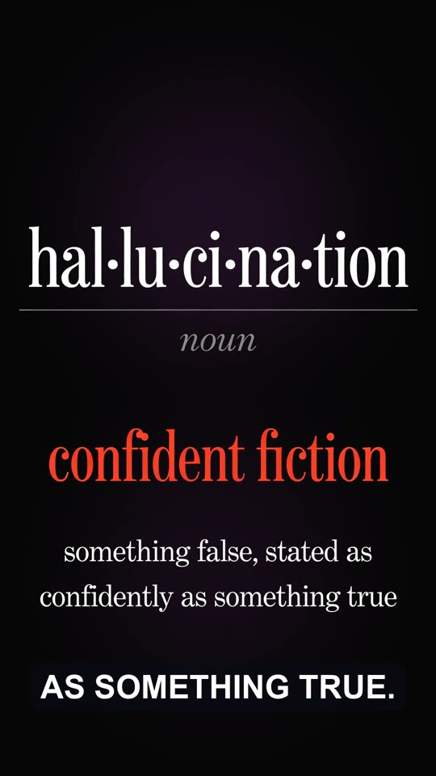
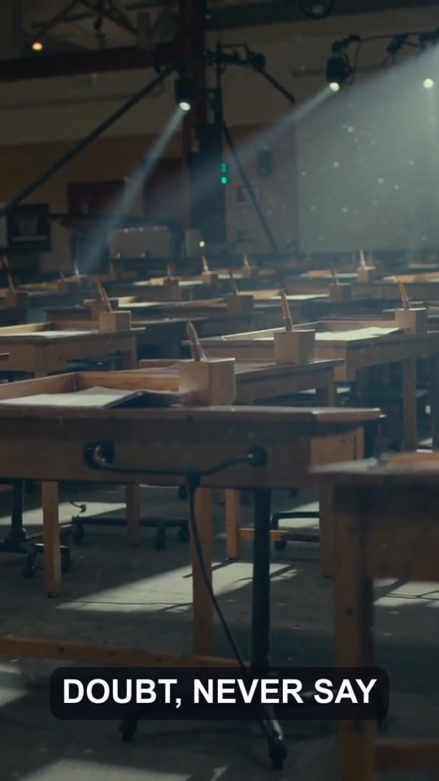

Vertical explainer shorts
One question, answered in under a minute for Shorts, Reels or TikTok: narration, cards with text you can read, b-roll that moves, and captions that follow the voice.
Two it made
Why is the sky blue? runs 52 seconds and cost about $0.80 to generate. AI hallucinations runs 3:41 with a cloned voice.


How it's built
The whole video comes from one scenes.json: a line of narration and one visual per scene.
- Voice each scene with Qwen3-TTS, a built-in voice or a clone, with a pace limit so it never rushes.
- Pictures by job: Ideogram for anything with text on it, LTX video for b-roll that moves, FLUX for text-free backgrounds. Image and video models garble letters, so text is never asked of them.
- Captions word by word from the audio's timing, but spelled from the script, so names come out right.
- Build anchored to the audio: each scene starts where its narration does. It renders at every stage, with placeholder cards before the pictures exist.


Start
Claude Code uses the concept-explainer-short template, pure Python with no Remotion. An agent with nobody at the terminal can do the same as a background job with a cost cap (agent video jobs, experimental).
Already have a 16:9 video? tools/cutdown.py --platform shorts makes the 9:16, 1:1 or 4:5 cut with ffmpeg.
# in Claude Code, from the toolkit:
Make a 50-second vertical explainer:
why does bread go stale?
# or as a job any agent can submit:
uv run tools/video_job.py submit --spec spec.json --max-usd 1